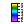
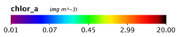
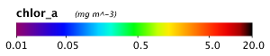
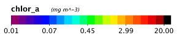
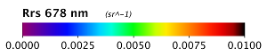
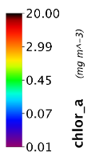

| Color Bar | |
|  |
The Color Bar tool is what enables display and formatting of the color bar, the color bar being a visual representation of the color palette, with its corresponding data values, which has been used in an image
File -> Export Utilities -> Color Bar |
The Color Bar tool has been significantly revised for SeaDAS 7.1 with a lot of new parameter option choices for the
user.
It now fully supports log-scaling, gives user full control over text tick labels (their values and formats),
adds ability to apply a data scaling factor to better display small or large values, supports transparency, the
preview
resizes to fit the screen no matter how large the color bar actually is, and the user can control the output file
dimensions.
Additionally, the color bar can now be made a layer over top the image.
The following images illustrate some of the possible color bar images which can be made.
These 5 images were made using the same chlor_a band.
|
 Image 1. Evenly distribution points (Log scaled) |
Image 2. Evenly distribution points (Linear scaled) |
|
 Image 3. Manually entered points (Log scaled) |
 Image 4. Discrete colors (Log scaled) |
The next two images illustrate the application of a scaling factor to improve the readability of labels (in this case for data values which are very small). Both images were made using the same Rrs_678 band.
|
 Image 5: No scaling factor applied |
Image 6: Scaling factor of 1000 applied |
Sometimes, the presentation of an image is better suited to a vertical color bar. The next image shows this
orientation.
|
 Image 7. Vertical orientation (Log scaled) |
The following image shows the Color Bar Tool window.
Orientation - enables selection of "Horizontal" or "Vertical" orientation of the color bar
Data Label Distribution & Numeric Formatting - The "Color Bar" tool does not affect a change on the
actual
distribution of colors within the color bar. It does however put labels at their corresponding data locations.
There are 3 different methods you can use to put the data labels on the color bar:
Mode: "Use Even Distribution" - selecting this mode enables the textfield "Tick Mark Count". Using this field, it
will evenly distribute tick marks between the color bar defined minimum and maximum value.
Mode: "Use Manually Entered Points" - selecting this mode enables the textfield "Manually Entered Points". The user
will
enter comma delimited values and these values will be placed on the color bar exactly as the user entered them. As
a help to the user, this textfield will be populated by default with the values from the previously selecting mode.
The user can then conveniently modify, reformat, delete, or add to this text string.
Mode: "Use Palette Distribution" - selecting this mode will place all points within the palette definition on the
color bar.
For many palettes this will likely be too many points, but their can be smaller palettes where this functionality
is desired.
"Decimal Places" - determines the decimal place setting for all the data labels.
"Data Scaling Factor" - every data label will be modified by multiplying it with this scaling factor. This can help
improve data with very small or very large numbers. Adjustment of this field away from "1.0" will of course, in
theory,
change the units, but the units textfield in the title will remain unaltered, leaving this as an exercise for the
user
to manually enter it.
Title -
The title is by default automatically set from the band info. The user is free to alter this, as well as hiding the
title via the "Show Title" checkbox. This checkbox toggles both the title and units together. If you wish to retain
the title but not display the units then you will need to remove the text from the "Title Units" textfield.
Formatting -
All size fields are in units of pixels and should be self-explanatory. The sizes refer specifically to sizing in the
exported file. To avoid pixelation in the exported file, you will want to keep the resolution fairly high.
The background color can be selected, or made
transparent by checking the "Transparent" checkbox. If you are saving the file, keep in mind that in order to affect
transparency you must use a file format (such as .png) which supports transparency.
Layer Scaling -
When creating a color bar layer, you can scale the color bar to the size of the scene image. By default, a
horizontal
color bar will be placed below the image, in this case the layer scaling refers to percentage of the scene width.
Likewise, a vertical
color bar will be placed to the right of the image, with the layer scaling referring to percentage of the scene
height.